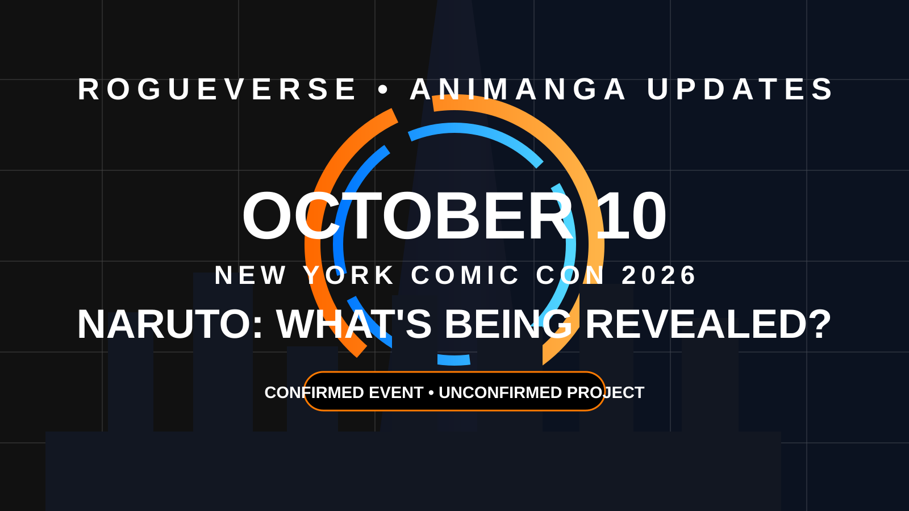

OLD MAN OTAKU / NARUTO NEWS • AUGUST 20, 2026
Naruto Is Teasing a Major October 10 Reveal, But Nobody Knows What It Is Yet
VIZ is counting down to a Naruto reveal at New York Comic Con with Junko Takeuchi and Noriaki Sugiyama attending. The event is confirmed. What the project actually is remains a mystery.

Something new is coming for Naruto at New York Comic Con 2026. What that “something” is remains the part nobody can responsibly fill in yet.
VIZ Media is teasing “exciting new updates” for a Naruto presentation on October 10, 2026. Japanese voice actors Junko Takeuchi, the voice of Naruto Uzumaki, and Noriaki Sugiyama, the voice of Sasuke Uchiha, are also scheduled to attend.
What we actually know
The October 10 event is real, the countdown is real, and the two longtime lead voice actors are part of the NYCC appearance. Their presence naturally raises expectations, but it does not identify the project.
As of August 20, VIZ has not announced that the reveal is a new television anime, remake, movie, sequel, game, or the return of the delayed four-episode Naruto anniversary project. Any headline presenting one of those possibilities as confirmed is getting ahead of the announcement.
What about the four anniversary episodes?
The postponed anniversary episodes are an obvious theory because fans are still waiting for a new release plan. They are relevant context, not evidence. Nothing currently ties the October 10 countdown specifically to those episodes.
The same rule applies to remake speculation. Naruto remains one of the largest anime franchises in the world, so a vague tease can produce a whole village of theories before the stage lights even turn on. That does not make the theories reporting.
The Old Man Otaku take
This is a case where the uncertainty is the story. Naruto has a confirmed NYCC reveal date and enough major franchise talent attached to make October 10 worth watching. The responsible headline stops there.
Confirmed event. Unconfirmed project. Let VIZ open the door before we decide what is standing behind it.
Copyright & ownership notice
Naruto, its characters, artwork, logos and associated intellectual property belong to Masashi Kishimoto, Shueisha and their respective licensees and rights holders. RogueVerse Studio claims no ownership of the franchise.